Resumen ejecutivo
Este documento cierra la Fase 3 de NYC Mobility Pulse. La Fase 2 dejó un wireframe de alta fidelidad —escritorio de 1440 px y móvil de 390 px— con una promesa concreta: que el tablero podía explicar cuándo, dónde y a qué costo se mueve Nueva York sin sacrificar la jerarquía visual. La Fase 3 convierte ese plano en código: una aplicación React 19 + TypeScript + Vite 6 que consume agregados precalculados con DuckDB y los renderiza con Recharts y Leaflet.
El punto de partida no fue una hoja en blanco. El repositorio ya tenía una versión funcional del tablero; el trabajo de esta fase consistió en auditar esa base contra el wireframe, cerrar las brechas y documentar cada decisión. Se reorganizó la banda de KPIs, se hicieron explícitos los cinco indicadores de la Fase 2 —incluidos el 87.1% de concentración en Manhattan y el 19.4% de viajes en hora pico— y se verificó que cada bloque del diseño tuviera un componente, una fuente de datos y una regla de lectura.
Ficha técnica del entregable
| Elemento | Definición |
|---|---|
| Proyecto | 4 — La movilidad urbana y el tráfico inteligente |
| Dataset | NYC TLC Yellow Taxi Trip Records · 8 archivos anuales (2015, 2017–2022, 2025) |
| Volumen fuente | 599,475,232 registros · 86.9 GB · 585,599,682 válidos (97.7%) |
| Muestra | 500,000 viajes por año · 4,000,000 en total · reservoir sampling con semilla 42 |
| Unidad espacial | 263 zonas TLC y 5 boroughs; 260 zonas activas en la muestra completa |
| Stack | React 19 · TypeScript 5.7 · Vite 6 · Recharts 2.15 · Leaflet 1.9 · CSS con variables |
| Datos del navegador | dashboard.json (741 KB) + taxi_zones.geojson (400 KB) |
| Compilación | 2,263 módulos · JS 899.6 KB (257.2 KB gzip) · CSS 53.3 KB (14.4 KB gzip) · 6.5 s |
Contenido
| 1 | Introducción: qué se implementó y cómo se lee este informe | 3 |
| 2 | Estructura del proyecto: árbol, componentes y flujo de datos | 4 |
| 3 | Justificación técnica: por qué React, Recharts, Leaflet y CSS plano | 6 |
| 4 | Correspondencia diseño → implementación, bloque por bloque | 8 |
| 4b | Correspondencia móvil: la misma historia en 390 px | 17 |
| 5 | Implementación de KPIs: fórmulas, formato y render | 19 |
| 6 | Implementación de gráficos: once visualizaciones y su porqué | 21 |
| 7 | Implementación del mapa: GeoJSON, coropleta e interacción | 24 |
| 8 | Paleta visual y estilos: tokens, tipografía y accesibilidad | 26 |
| 9 | Problemas encontrados y soluciones | 28 |
| 10 | Reflexión técnica | 30 |
| 11 | Conclusión y autoevaluación | 31 |
| A | Anexo: comandos, trazabilidad de figuras y referencias | 32 |
Cada capítulo empieza en página nueva para que la lectura y la evaluación puedan hacerse por bloques.
Introducción
Un dashboard puede verse bien y, aun así, no ser un buen dashboard. La diferencia está en si cada elemento tiene una razón: un KPI que responde a una pregunta, un gráfico que hace visible un patrón, un color que distingue una categoría, un filtro que cambia el significado de lo que se lee. La consigna de la Fase 3 lo dice sin rodeos: la prioridad no es “que se vea bonito”, sino que el desarrollo respete las decisiones de diseño y sea plenamente documentado. Este informe se toma esa frase al pie de la letra.
El objetivo del dashboard es táctico: permitir que alguien decida dónde, cuándo y cómo se mueve la ciudad. La pregunta central de la Fase 2 sigue vigente: ¿cuándo, dónde y a qué costo se mueve Nueva York? Para responderla, el tablero combina una serie temporal, un mapa de 263 zonas TLC, tres histogramas económicos, un boxplot de duración, una dispersión distancia–tarifa y una tabla de rutas origen–destino. Todo se lee a través de un único filtro de año que recalcula KPIs, gráficos y mapa al instante.
Qué significa “implementar” en esta fase
Implementar no fue dibujar el wireframe con HTML. Fue traducir cada bloque a un componente con responsabilidades claras, conectarlo a una fuente de datos real y resolver los estados que el wireframe no muestra: carga, error, año sin comparación, móvil, teclado y movimiento reducido. El wireframe es un contrato visual; el código es el contrato ejecutable. La correspondencia se demuestra con tres cosas:
- Estructura: el orden y la proporción de los bloques se conservan (hero 2 columnas, demanda 2/3 + 1/3, mapa 1.7/0.8, economía en tres tarjetas).
- Datos: las cifras del wireframe se pueden reproducir seleccionando 2025 y provienen de los mismos agregados que el resto del tablero.
- Lenguaje visual: la paleta, la tipografía y la jerarquía N1/N2/N3 se aplican con tokens, no con decisiones improvisadas por componente.
Alcance y límites
El tablero es estático: no hay backend ni consultas SQL en el navegador. Los agregados se construyen una vez
con DuckDB y se publican como JSON; el navegador solo hace fetch, formatea y dibuja. Esa decisión
reduce el costo de infraestructura y hace que el tablero funcione en GitHub Pages, pero también impone límites:
no se puede explorar el dataset completo desde la interfaz ni cruzar filtros que no estén precalculados. El
informe los declara en la sección de problemas y en la metodología del propio tablero.
La muestra es de 500,000 viajes por año, no del universo. Sirve para comparar formas, proporciones y tendencias; no para afirmar el volumen absoluto de la ciudad. Los totales de la fuente y los de la muestra se muestran siempre por separado. Esta distinción es una decisión editorial de la Fase 2 que la implementación conserva: el hero habla de 599.5 M registros procesados y el KPI de 4,000,000 viajes analizados.
Finalmente, el estado inicial del tablero es “Todos”, no 2025. El wireframe se dibujó con 2025 porque necesitaba cifras comparables con la Fase 2; el producto abre en la vista histórica porque su promesa es mostrar ocho años de una vez. Las dos vistas están documentadas con capturas y la diferencia se explica en el capítulo 4: no es una inconsistencia, es una decisión de producto con una ruta de reproducción explícita.
Estructura del proyecto
La organización del repositorio no es accidental. En la raíz conviven tres mundos que deben poder auditarse por
separado: el pipeline de datos (etl/, data/), la
aplicación (src/, public/) y la documentación
(docs/). Dentro de src/, la separación es la clásica de React: componentes que dibujan,
hooks que encapsulan comportamiento y un módulo lib/ que concentra tipos, carga de datos, formatos y
movimiento. Ningún componente hace SQL ni conoce DuckDB; ninguno formatea una cifra a mano si existe una función
en lib/format.ts.
| Carpeta / archivo | Responsabilidad | Por qué está separada |
|---|---|---|
src/components/ | Un componente por bloque visual: Header, Hero, KpiGrid, MonthlyChart, Heatmap, ZonesSection, EconomySection, EfficiencySection, RoutesSection, Methodology, Footer y piezas reutilizables (ui, Reveal, ChartHelp, BoxPlot). | Permite cambiar un bloque sin tocar los demás y hace que el wireframe se lea como una lista de componentes. |
src/lib/data.ts | Carga el JSON, filtra por año y agrega series cuando el filtro es “Todos” (hourlyFor, zonesFor, monthlyFor). | La lógica de datos no vive dentro del JSX; se puede probar y reutilizar. |
src/lib/format.ts | Formatos es-MX, meses, días, colores de calor, correlación de Pearson y cambios porcentuales. | Una sola fuente para que “$20.39” se escriba igual en toda la aplicación. |
src/lib/types.ts | Contratos de Kpi, MonthlyRow, ZoneRow, DashboardData, etc. | TypeScript detecta si un componente espera un campo que el JSON no trae. |
src/styles.css | Variables de color y tipografía, retícula, tarjetas, mapa, heatmap, breakpoints y estados de foco. | La paleta se define una vez; el resto del código consume tokens. |
etl/ | Pipeline reproducible: extrae, limpia, muestrea, agrega y exporta. | El navegador nunca procesa 86.9 GB; recibe resultados pequeños y verificables. |
public/data/ | Únicos datos que viajan al cliente: agregados y geometría. | Son activos estáticos, cacheables y versionables; no requieren servidor. |
Los 17 componentes y su función
| Componente | Qué renderiza | Dato que consume |
|---|---|---|
Header | Marca, navegación por anclas, tira de años en escritorio y menú compacto en móvil; barra de progreso de lectura. | meta.years, year |
Hero | Titular, descripción, chips de fuente y ticket de datos (registros, años, zonas, viajes por año). | meta, kpi |
KpiGrid | Seis tarjetas con valor animado, delta contra el año previo y una línea de contexto. | kpi, previous |
ReadingGuide | Cuatro gestos de lectura y la leyenda de colores del tablero. | Estático |
MonthlyChart | Área histórica cuando el año es “Todos”; barras del año + línea punteada del año previo cuando hay año. | monthly |
Insights | Lectura rápida del periodo: mes pico, hora pico, zona líder, propina y velocidad. | kpi, monthly, hourly, zones |
Heatmap | Matriz 7 × 24 (día × hora) construida con CSS Grid; tooltip por celda y pico semanal. | hourly |
ZonesSection | Mapa Leaflet, filtros por borough y métrica, detalle de zona y ranking top 10. | zones, GeoJSON |
EconomySection | Histograma de tarifa, histograma de distancia y dona de método de pago. | histFare, histDistance, payment |
EfficiencySection | Boxplot de duración por franja y dispersión distancia–tarifa con correlación. | boxplot, scatter |
RoutesSection | Tabla de las diez rutas origen–destino más frecuentes. | routes |
Methodology | Pipeline en cuatro pasos, reglas de limpieza y tabla de calidad por año. | meta, quality |
Footer | Equipo, docente, fuente, stack y enlace al documento de la fase anterior. | Estático |
ui | Card, Segmented, Delta, ChartTooltip: piezas compartidas. | Props |
Reveal | Aparición progresiva al entrar en viewport; se desactiva con movimiento reducido. | IntersectionObserver |
ChartHelp | Explicación desplegable “¿Cómo leer esta gráfica?” para cada visualización. | Texto |
BoxPlot | SVG propio para la distribución de duración por franja horaria. | boxplot |
Flujo de datos: del CSV al píxel
La arquitectura se entiende en una línea: el dato pesado se queda en el ETL y al navegador solo llega el agregado. Ese corte es la decisión más importante del proyecto porque explica por qué un tablero de 86.9 GB puede abrir en unos segundos desde GitHub Pages.
El JSON tiene 13 claves: meta, kpis, monthly, hourly,
zones, boroughs, payment, histFare,
histDistance, boxplot, scatter, routes y
quality. Cada una corresponde a una sección del tablero; no hay datos “por si acaso”. El navegador
no ejecuta SQL ni conoce el esquema original: recibe filas ya agregadas y solo decide cómo mostrarlas.
Compilación y entrega
| Métrica | Valor | Lectura |
|---|---|---|
| Módulos transformados | 2,263 | Vite resuelve React, Recharts, Leaflet y los 17 componentes. |
| JavaScript de producción | 899.6 KB · 257.2 KB gzip | Incluye Recharts y Leaflet; es el costo de tener gráficos y mapa sin backend. |
| CSS de producción | 53.3 KB · 14.4 KB gzip | Un solo archivo con tokens y todos los breakpoints. |
| Tiempo de build | 6.5 s | tsc --noEmit + vite build sin errores. |
| Salida | dist/ | Rutas relativas (base: './') para funcionar en GitHub Pages sin configuración extra. |
La compilación se verificó con npm run build antes de capturar las figuras de este
informe. El comando incluye el chequeo de tipos: si un componente recibe un dato con la forma equivocada, el build
falla antes de publicar. Esa es la primera red de seguridad de la fase.
Justificación técnica
La consigna sugería un stack, no imponía uno. La elección se hizo comparando tres criterios: qué necesitaba el diseño (series, mapa, tooltips, responsive), qué se podía mantener con el tiempo del equipo y qué cabía en un sitio estático. El resultado es deliberadamente conservador: React para la composición, Recharts para los gráficos SVG, Leaflet para el mapa y CSS plano con variables para el sistema visual. No hay router, no hay estado global, no hay backend.
| Necesidad | Elección | Alternativa descartada | Por qué |
|---|---|---|---|
| Componer bloques visuales | React 19 + TypeScript | HTML + JS imperativo; Vue | El wireframe ya está escrito como una lista de bloques. React permite que cada bloque sea un componente con props tipadas; TypeScript convierte el JSON en un contrato verificable. |
| Build y despliegue | Vite 6 | Create React App; Webpack a mano | Arranque y HMR rápidos, salida estática y base: './' para GitHub Pages. CRA está en desuso y Webpack añade configuración sin beneficio para este tamaño. |
| Gráficos | Recharts 2.15 | Chart.js; Plotly; D3 puro | Recharts es declarativo y SVG: los colores, ejes y tooltips se controlan con props, igual que el resto de la interfaz. Chart.js dibuja en canvas (más difícil de estilar y de hacer accesible); Plotly pesa más y su estética choca con la paleta; D3 daría control total a cambio de mucho más código. |
| Mapa | Leaflet 1.9 + React-Leaflet 5 | Mapbox GL; D3 geo; Google Maps | Leaflet consume GeoJSON de forma nativa, no requiere token ni tarjeta y permite un mapa coroplético con tooltips en pocas líneas. Mapbox y Google añaden dependencia de servicio; D3 geo exigiría implementar zoom, pan y proyecciones. |
| Carga de datos | fetch + JSON | Axios; API REST; SQL en el navegador | El dato ya está agregado y es estático. fetch es nativo y suficiente; Axios no aporta nada aquí. Ejecutar SQL en el cliente exigiría descargar el dataset o un motor WASM innecesario. |
| Estilos | CSS plano + variables | Tailwind; CSS Modules; styled-components | La paleta de la Fase 2 se traduce a tokens en :root y se lee en un solo archivo. Tailwind escondería los hex en clases; CSS-in-JS añadiría runtime. Para un equipo pequeño y una entrega evaluable, un CSS legible es una ventaja. |
| Iconos | lucide-react | Font Awesome; SVG a mano | Iconos SVG tree-shakeables, con el mismo grosor de trazo en toda la interfaz. Se importan solo los que se usan. |
| Navegación | Anclas HTML | React Router | El tablero es una sola página con cinco secciones. Un router añadiría peso y estados de URL sin rutas reales. Las anclas conservan el desplazamiento suave y el foco. |
| Estado | useState + useMemo | Redux; Zustand; Context global | Solo hay un filtro compartido (el año) y datos derivados. Levantar un store global sería sobreingeniería; el estado vive en App y baja por props. |
El contrato de datos
El archivo src/lib/types.ts es la frontera entre el ETL y la interfaz. Si el JSON cambia de forma,
TypeScript lo detecta en el build. El tipo Year merece atención porque atraviesa toda la aplicación:
es un número o la cadena 'all', y esa distinción obliga a tratar la vista histórica como un caso
propio, no como “el año cero”.
El tipo Year y el contrato de un KPI. El resto de los tipos sigue el mismo patrón: una interfaz por tabla del JSON.
La carga también es deliberadamente simple. No hay capa de repositorio ni caché manual: un fetch
relativo a document.baseURI para que funcione igual en local y en GitHub Pages, y un error explícito
si el JSON no está. Esa simplicidad es una decisión de mantenimiento: cualquiera que abra el proyecto puede
seguir el dato desde el archivo hasta el gráfico sin saltar entre capas.
Una sola función de carga. El estado de error de App muestra un mensaje accionable si el archivo falta.
La alternativa de cargar los Parquet con DuckDB-WASM habría permitido más libertad de consulta, pero habría multiplicado el peso de la página y el tiempo de arranque. Se descartó por costo/beneficio, no por desconocimiento: la sección 9 documenta esa decisión como un límite consciente.
Correspondencia diseño → implementación
La comparación se hace con el filtro en 2025 porque el wireframe de la Fase 2 se dibujó con ese año: era la única forma de que las cifras del plano y las del producto fueran comparables. El tablero abre en “Todos”; seleccionar 2025 es un clic. Las capturas se tomaron a 1440 px, con movimiento reducido para que las animaciones no alteraran la imagen, y se recortaron por bloques para que el detalle sea legible en A4. El wireframe no se rehízo: se usan las figuras originales de la Fase 2.
Cómo se obtuvieron las capturas
La comparación solo vale si las dos imágenes son reproducibles. Por eso cada captura declara su viewport, su
estado y la herramienta que la produjo. El dashboard se sirvió desde el build de producción
(dist/) y se fotografió con Edge headless; el wireframe se tomó de las figuras originales de la
Fase 2, sin retoques ni reconstrucciones. Ninguna imagen se compuso a mano: todas salen de un comando que puede
volver a ejecutarse.
| Parámetro | Valor | Por qué |
|---|---|---|
| Viewport | 1440 × 10000 px (escritorio) y 390 × 16000 px (móvil) | Coincide con los dos anchos del wireframe y evita el scroll horizontal. |
| Escala | --force-device-scale-factor=1 | Las medidas del recorte corresponden a píxeles CSS reales. |
| Movimiento | --force-prefers-reduced-motion | Congela el conteo de KPIs y las animaciones de Recharts en su valor final. |
| Estado | 2025 para la comparación; “Todos” como estado inicial documentado | Es el año con el que se dibujó el wireframe y el que permite verificar sus cifras. |
| Recorte | Un bloque por figura, sin reescalado del texto | Mantiene la legibilidad en A4 y deja ver el detalle de cada sección. |
El estado 2025 se fijó con una página auxiliar del mismo origen que carga la aplicación en un
iframe y pulsa el botón del año; así no se modificó el código del tablero para “posar” la captura. El script
docs/fase3/make_figures.py reproduce todo el proceso, y la página auxiliar se elimina al terminar.
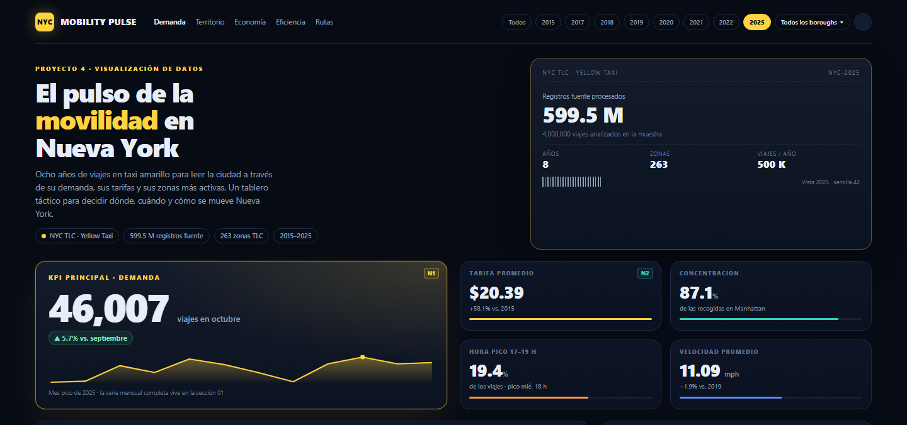
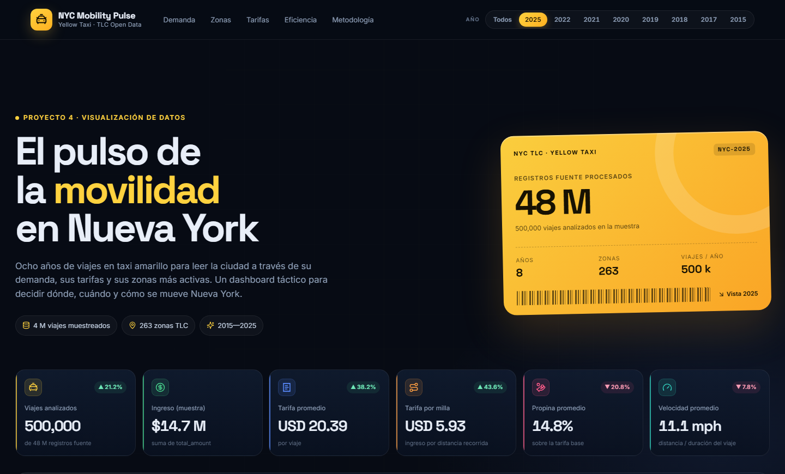
Fig. 4.1. Identidad, hero y banda de KPIs. Se conservan la retícula de dos columnas (1.45 / 0.85), el titular en tres líneas con “movilidad” en amarillo, los chips de fuente y el ticket de datos con años, zonas y viajes por año. El dashboard añade dos KPIs (ingreso y tarifa por milla) y convierte la tarjeta principal en una banda de seis tarjetas equivalentes; las cinco cifras de la Fase 2 siguen visibles en el estado 2025.
La primera diferencia salta a la vista: el wireframe concentraba la jerarquía en una tarjeta N1 —46,007 viajes en octubre— y cuatro tarjetas N2. El dashboard usa seis tarjetas del mismo tamaño. La razón es funcional: el filtro de año cambia el significado de “viajes en octubre”; con “Todos” ese número sería la suma de ocho octubres y perdería la lectura de mes pico. En la implementación, la demanda se expresa en la serie mensual y en las lecturas rápidas, donde octubre conserva su cifra exacta. Las otras cuatro tarjetas del wireframe se mantienen: tarifa ($20.39), velocidad (11.1 mph), concentración (87.1%, en el subtítulo del mapa) y hora pico (19.4%, en las lecturas rápidas).
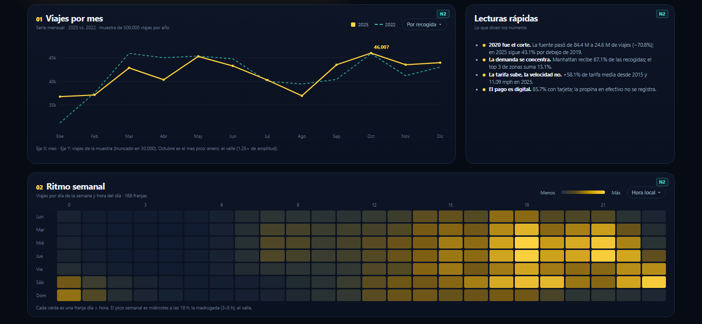
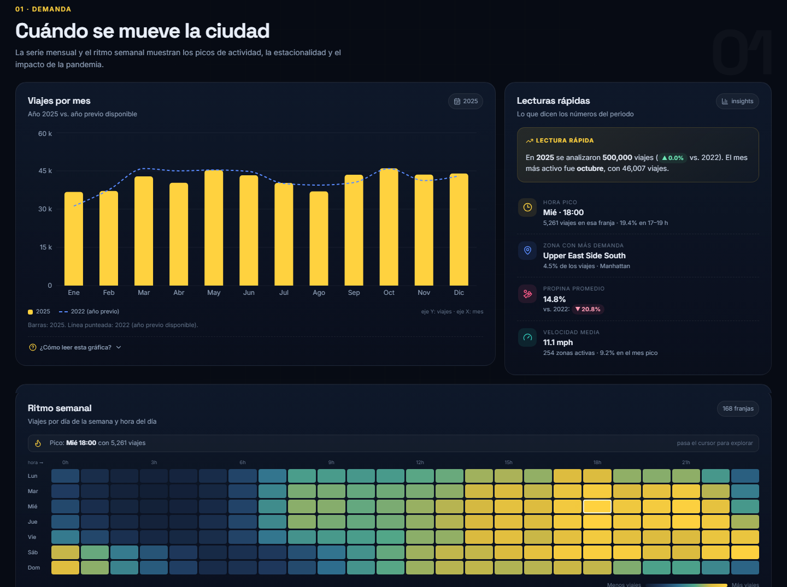
Fig. 4.2. Demanda: serie mensual, lecturas y heatmap. La estructura 2/3 + 1/3 se conserva, igual que el heatmap a ancho completo. El dashboard añade la lectura “octubre, con 46,007 viajes” y la participación de 19.4% en 17–19 h, dos cifras que el wireframe mostraba en la banda KPI y que aquí viven en el bloque que las explica.
En el estado “Todos” el gráfico mensual es un área que recorre 2015–2025 y marca el desplome de 2020; en el estado 2025 es un gráfico de barras con línea punteada del año previo. Es el mismo componente con dos ramas de render, no dos gráficos distintos. El wireframe dibujó la versión 2025 porque era la que permitía comparar con la Fase 2; la implementación conserva ambas porque la vista histórica es la que justifica el proyecto. El heatmap es idéntico en concepto: 7 días × 24 horas, 168 celdas y una escala secuencial de azul a amarillo.
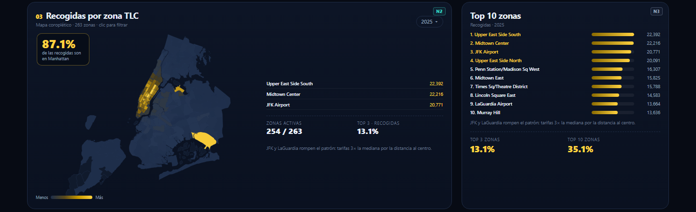
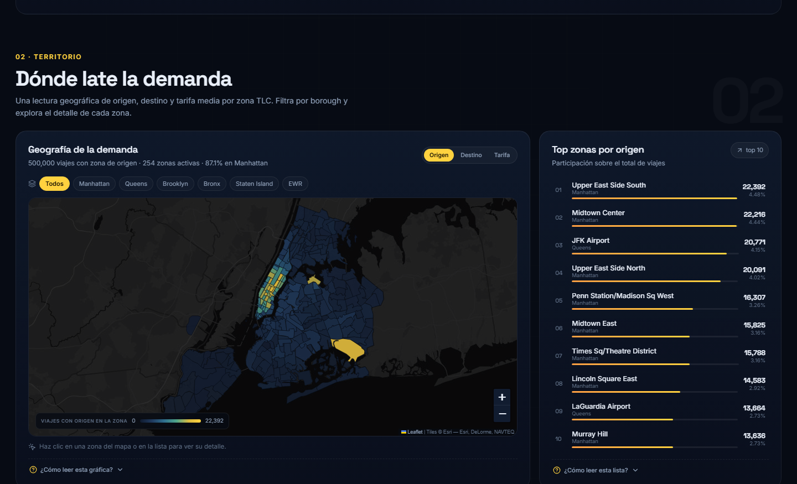
Fig. 4.3. Territorio: coropleta, filtros y top 10. La proporción 1.7 / 0.8, los chips de borough, la leyenda “Menos → Más”, el 87.1% de concentración y la lista con barras se conservan. El dashboard añade el selector Origen / Destino / Tarifa, el zoom y un panel de detalle por zona; el wireframe resolvía el detalle con una nota al pie.
El mapa es el bloque donde más se nota el paso de maqueta a aplicación. El wireframe usaba un SVG estático con la silueta de la ciudad; el dashboard usa Leaflet con las 263 geometrías TLC, un mapa base oscuro de Esri y una coropleta que se recolorea al cambiar de métrica o de borough. La sustancia visual no cambió: Manhattan sigue siendo la mancha amarilla dominante y los aeropuertos siguen apareciendo como polos aislados. El ranking confirma la misma historia: Upper East Side South (22,392), Midtown Center (22,216) y JFK (20,771) en los tres primeros puestos.
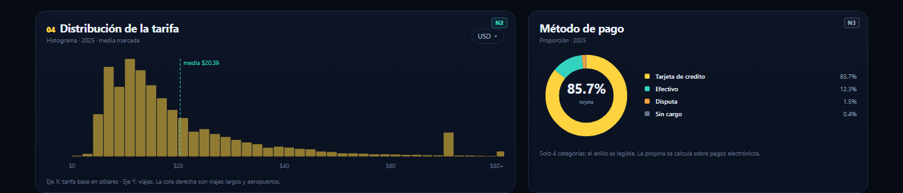
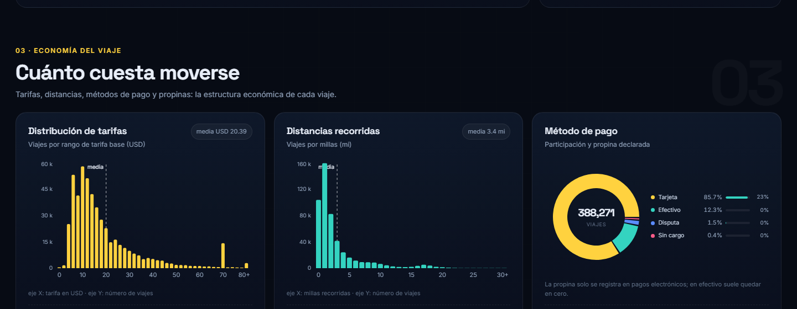
Fig. 4.4. Economía: tarifa, distancia y método de pago. Se conservan el histograma con la línea de la media, la dona con la leyenda y los colores categóricos. El dashboard añade el histograma de distancias, que el wireframe mencionaba en la narrativa pero no le daba tarjeta, y muestra la propina declarada por método de pago.
La tarifa media de 2025 ($20.39) aparece como línea vertical en el histograma y como cifra en la tarjeta KPI: el mismo dato, dos lecturas. La distribución tiene la cola derecha típica de los viajes largos y un pico secundario cerca de $70, asociado a trayectos al aeropuerto. La dona resume una ciudad que ya paga mayoritariamente con tarjeta (85.7%), con efectivo en segundo lugar (12.3%) y una porción marginal de disputas y sin cargo. El wireframe ya había identificado ese patrón; la implementación lo confirma con los datos de 2025.
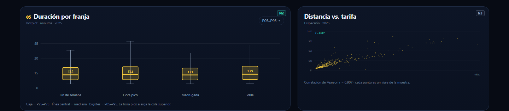
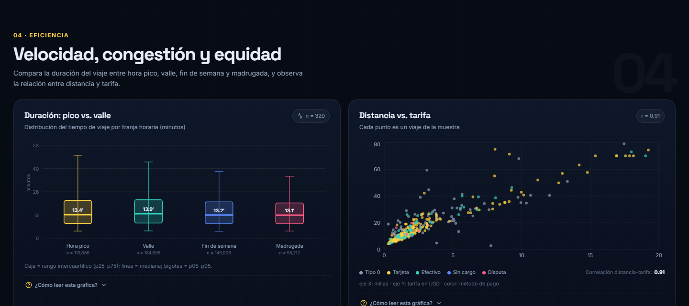
Fig. 4.5. Eficiencia: duración por franja y distancia vs. tarifa. Se conservan el boxplot con medianas etiquetadas, la dispersión coloreada por método de pago y la anotación de correlación. El dashboard reordena los grupos (hora pico, valle, fin de semana, madrugada) para que la comparación empiece por el contraste que importa; las cifras son las que salen de los datos, no las de la maqueta.
El wireframe dibujó medianas redondas (12, 14.4, 15, 13.9 min) para mostrar la idea; el dashboard calcula las reales de 2025: 13.4 min en hora pico, 13.9 en valle, 13.2 en fin de semana y 13.1 en madrugada. La lección se mantiene: la hora pico alarga la cola superior —el p95 llega a 47.3 min— aunque la mediana no sea la más alta. La dispersión confirma una correlación fuerte entre millas y tarifa (r = 0.91), con los viajes en efectivo ligeramente por debajo de la nube para la misma distancia.
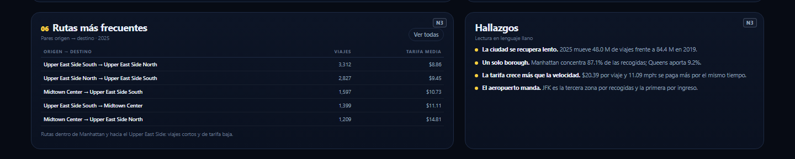
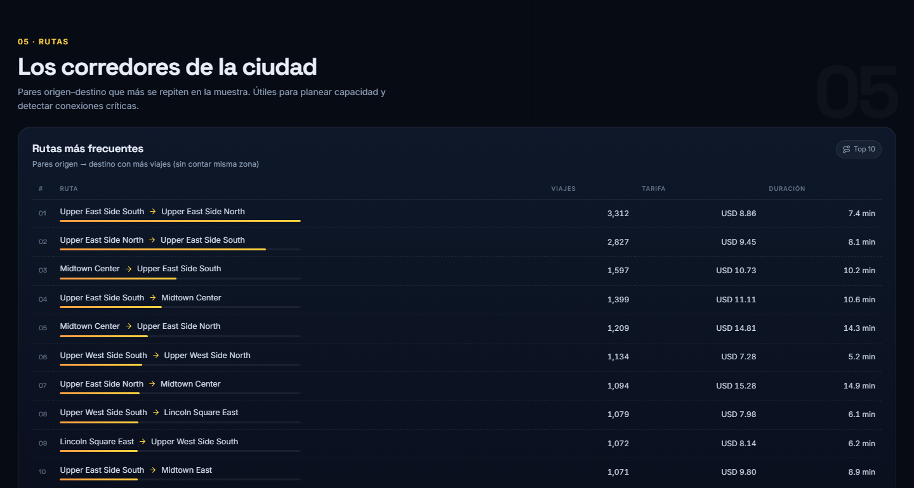
Fig. 4.6. Rutas: la tabla de corredores. Se conservan el orden descendente, el par origen → destino, la barra bajo el nombre y las columnas de viajes y tarifa. El dashboard añade la duración media, un dato que el wireframe no mostraba y que ayuda a distinguir un viaje corto de un cuello de botella.
La tabla es el bloque más “de datos” del tablero y, por eso, el más fácil de comparar. Las diez rutas de 2025 son casi todas internas de Manhattan, con ida y vuelta entre Upper East Side South y North en los dos primeros puestos (3,312 y 2,827 viajes). La implementación no inventa categorías: muestra el par, los viajes, la tarifa media y la duración, y deja que el lector vea el patrón. La barra bajo el nombre es una ayuda de lectura, no un gráfico aparte: compara cada ruta con la primera.
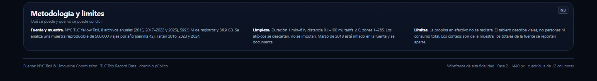
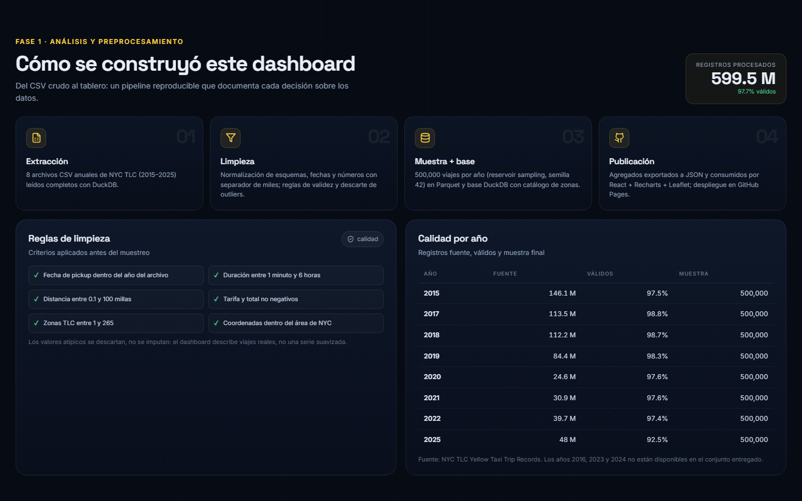
Fig. 4.7. Metodología: pipeline, reglas y calidad. Se conservan los cuatro pasos, las reglas de limpieza y la tabla de calidad por año. El dashboard titula el bloque “Cómo se construyó este dashboard” y lo etiqueta como Fase 1 porque documenta el pipeline que alimenta la aplicación; los límites siguen escritos al pie.
La metodología no es un adorno: es la defensa de las cifras. El bloque explica que se leyeron ocho archivos anuales, que se descartaron duraciones fuera de 1 min–6 h, distancias fuera de 0.1–100 millas y tarifas negativas, y que se conservó una muestra reproducible de 500,000 viajes por año. También declara lo que no se puede concluir: la propina en efectivo no se registra y el tablero describe viajes, no personas. Esa honestidad es parte del diseño y se mantiene en la implementación.
Balance de correspondencia
| Bloque | Wireframe Fase 2 | Implementación React | Veredicto |
|---|---|---|---|
| Identidad y filtros | Header con marca, nav y tira de años; 2025 activo | Header sticky, nav por anclas, tira de años y menú compacto en móvil | Se conserva y se amplía |
| Hero + ticket | Dos columnas; ticket oscuro con 599.5 M | Dos columnas; ticket amarillo con 48 M en 2025 / 599.5 M en Todos | Se conserva; cambia el color |
| Banda KPI | 1 principal + 4 secundarias | 6 tarjetas equivalentes | Se reorganiza; los 5 KPIs siguen |
| 01 Demanda | Serie mensual 2/3 + lecturas 1/3; heatmap | Área o barras+línea 2/3 + lecturas 1/3; heatmap 7×24 | Se conserva y se amplía |
| 02 Territorio | Mapa SVG + top 10; 87.1% | Leaflet + top 10 + detalle; 87.1% en el subtítulo | Se conserva y se amplía |
| 03 Economía | Histograma de tarifa + dona | Histograma de tarifa + distancia + dona | Se conserva y se añade distancia |
| 04 Eficiencia | Boxplot + dispersión | Boxplot SVG + ScatterChart con r | Se conserva; cifras reales |
| 05 Rutas | Tabla top 10 (viajes, tarifa) | Tabla top 10 (viajes, tarifa, duración) | Se conserva y se añade duración |
| Metodología | Pipeline, reglas y límites | Pipeline, reglas, calidad y límites | Se conserva y se amplía |
| Footer | Equipo, fuente, stack | Equipo, docente, fuente, stack y enlace a Fase 2 | Se conserva y se amplía |
Las cuatro desviaciones deliberadas
Una correspondencia honesta no oculta las diferencias; las explica. Estas son las únicas cuatro que afectan la lectura visual, y ninguna elimina un bloque o un KPI de la Fase 2.
| # | Desviación | Por qué se tomó |
|---|---|---|
| 1 | Banda de 6 tarjetas en lugar de 1 + 4 | El filtro de año hace que “viajes en octubre” no sea comparable en la vista histórica. La demanda se trasladó a la serie mensual y a las lecturas rápidas; las otras cuatro tarjetas se conservaron y se añadieron ingreso, tarifa por milla y propina. Todos los indicadores reaccionan al filtro. |
| 2 | Ticket amarillo en lugar de oscuro | Al liberar la tarjeta N1, el ticket quedó como el único bloque de color pleno del hero. El amarillo #FFD23F tiene 13.63:1 de contraste sobre el fondo y es el color del objeto de estudio; usarlo como ancla visual es coherente con la paleta de la Fase 2. |
| 3 | Etiquetas de navegación: Zonas, Tarifas, Metodología | El wireframe usaba Territorio, Economía y Rutas. En 1440 px, cinco anclas cortas caben sin desplazar la tira de años; “Rutas” se alcanza con scroll y la sección conserva su número 05. Las etiquetas nuevas coinciden con el título visible de cada sección. |
| 4 | Estado inicial “Todos” en lugar de 2025 | La promesa del producto es mostrar ocho años; abrir en la vista histórica la cumple de inmediato. El estado 2025 sigue a un clic y es el que se usa en este capítulo para comparar con el wireframe. La diferencia está documentada, no escondida. |
Correspondencia móvil
El wireframe móvil de la Fase 2 no era una miniatura del escritorio. Reordenaba: hero, ticket, KPIs en dos
columnas, serie mensual, heatmap, mapa y detalles. La implementación sigue esa lógica con los breakpoints de
styles.css (1180, 860, 640, 420 y 360 px). A 390 px, la navegación horizontal desaparece, la tira de
años se convierte en un selector compacto y las tarjetas se apilan. El resultado se capturó con el mismo estado
2025 para que las cifras coincidan.

Hero, ticket, KPI principal y cuatro secundarios; la serie mensual empieza al final de la pantalla.
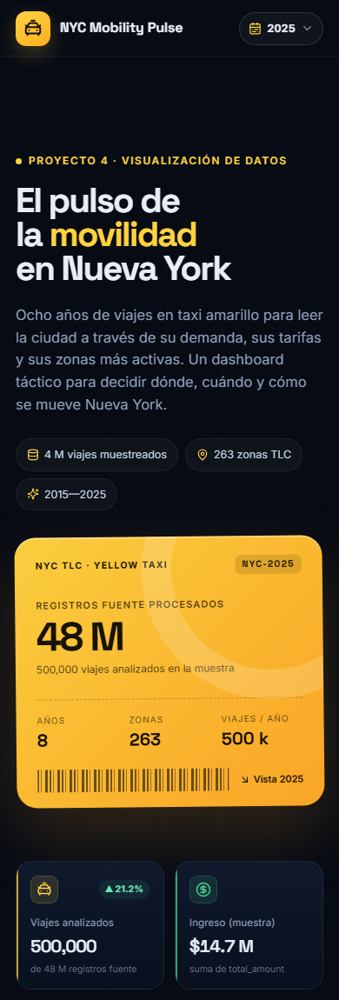
Hero, ticket, seis KPIs en dos columnas y guía de lectura. La serie mensual queda un poco más abajo.
Fig. 4.8. Primera pantalla en móvil. Se conservan el orden, el titular, el ticket y la retícula de dos columnas para los KPIs; cambian el número de tarjetas y el selector de año, que pasa a un menú compacto para no desbordar la barra.
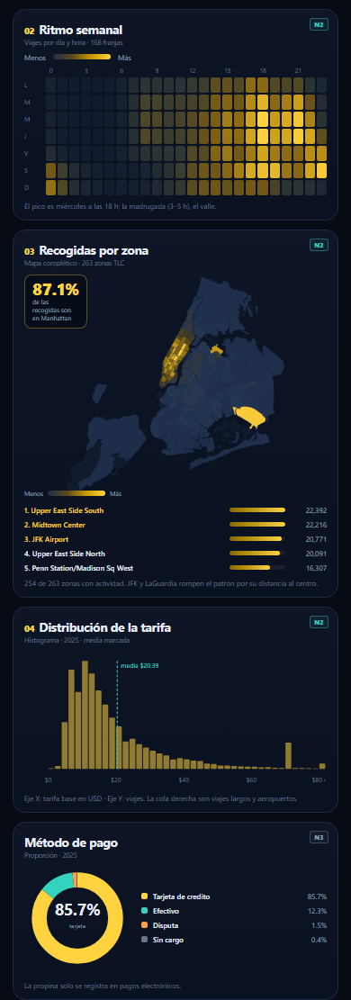
Serie mensual con barras y línea del año previo, leyenda y notas al pie.
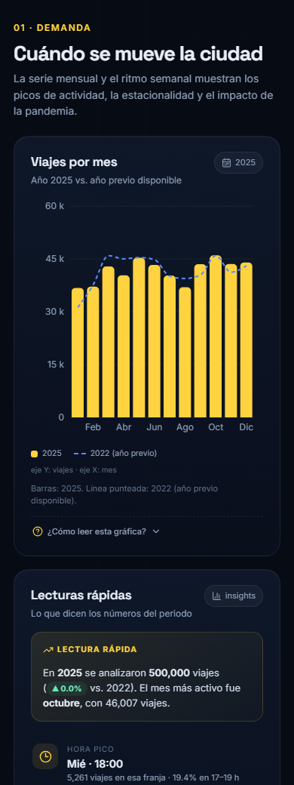
Misma serie, mismo orden y misma lectura; el eje X abrevia los meses para caber en 390 px.
Fig. 4.9. Sección 01 en móvil. El gráfico mantiene la proporción, la línea punteada del año previo y la nota de lectura; la ayuda “¿Cómo leer esta gráfica?” se conserva como acordeón para no robar altura.
La decisión de diseño más importante en móvil fue no reducir el texto. El cuerpo sigue en 15 px y los controles táctiles apuntan a 44 × 44 px; lo que se reduce es la densidad, no la legibilidad. El selector de año es el ejemplo claro: en escritorio es una tira de botones; en móvil, un botón que abre un menú con “Todos los años” y la rejilla de años. Es el mismo estado, con otra affordance.
Implementación de KPIs
Un KPI no es un número grande: es una respuesta a una pregunta. La banda del tablero responde seis preguntas
distintas y lo hace siempre con el mismo formato: etiqueta, valor, delta contra el periodo anterior y una línea de
contexto. El valor sale de data.kpis[String(year)]; el delta, de comparar con el año previo
disponible; el contexto, de la fuente y del tamaño de la muestra. Nada se calcula en el JSX salvo el formato.
| Tarjeta | Cálculo | Campo | 2025 | Todos |
|---|---|---|---|---|
| Viajes analizados | count(*) de la muestra del periodo | trips | 500,000 | 4,000,000 |
| Ingreso (muestra) | sum(total_amount) de los viajes válidos | revenue | $14.7 M | $78.2 M |
| Tarifa promedio | avg(fare_amount) por viaje | avg_fare | $20.39 | $14.11 |
| Tarifa por milla | sum(fare_amount) / sum(distancia) | fare_per_mile | $5.93 | $4.50 |
| Propina promedio | sum(tip_amount) / sum(fare_amount) en pagos electrónicos | tip_pct | 14.8% | 15.8% |
| Velocidad promedio | millas / (minutos / 60), sobre viajes válidos | avg_speed | 11.1 mph | 11.7 mph |
Las tres primeras tarjetas describen el volumen y el dinero; las tres siguientes describen la calidad del viaje. Esa progresión no es casual: primero se muestra cuánto hay, después cuánto cuesta y finalmente qué tan eficiente es. El orden coincide con las preguntas del hero y con las secciones que vienen después: demanda, economía y eficiencia.
Cada tarjeta declara su etiqueta, su valor crudo y su formateador. El componente no sabe de dónde viene el dato; solo lo presenta.
Del valor crudo al número legible
La animación de las cifras es una decisión de lectura, no un adorno. Al cambiar de año, los valores se
interpolan con useCountUp durante 700 ms para que el ojo siga la transición en lugar de enfrentarse a
un salto. Si el sistema pide movimiento reducido, el hook devuelve el valor final sin animar. El componente se
vuelve a montar con key={String(year)}, de modo que la animación empieza desde el valor anterior y no
desde cero.
Los formatos viven en lib/format.ts y usan Intl.NumberFormat('es-MX'). Eso resuelve
tres problemas de una vez: separador de miles, moneda y porcentaje con el mismo criterio en toda la aplicación.
La velocidad se muestra con un decimal y la tarifa con dos; el ingreso se compacta a millones para que la tarjeta
no se desborde. La precisión completa queda en el tooltip y en el JSON, no se pierde: solo se redondea la
presentación.
Los cinco KPIs de la Fase 2, uno por uno
La consigna pide que cada KPI corresponda al listado y justificado en la Fase 2. La implementación no solo los conserva: los hace verificables. Esta tabla es la prueba de que ninguna cifra del wireframe se perdió al pasar a React.
| KPI de Fase 2 | Valor 2025 | Dónde se renderiza | Cómo se comprueba |
|---|---|---|---|
| Viajes en octubre (demanda) | 46,007 | Serie mensual + lectura rápida “El mes más activo fue octubre, con 46,007 viajes”. | Fig. 4.2; pico visible en la barra de octubre. |
| Tarifa promedio | $20.39 | Tarjeta KPI “Tarifa promedio” y línea de media en el histograma. | Fig. 4.1 y Fig. 4.4. |
| Concentración en Manhattan | 87.1% | Subtítulo del mapa: “500,000 viajes con zona de origen · 254 zonas activas · 87.1% en Manhattan”. | Fig. 4.3. |
| Participación de hora pico (17–19 h) | 19.4% | Lectura rápida “Hora pico”: “5,261 viajes en esa franja · 19.4% en 17–19 h”. | Fig. 4.2; heatmap con el pico del miércoles 18:00. |
| Velocidad promedio | 11.1 mph | Tarjeta KPI “Velocidad promedio” (el dato completo es 11.09 mph). | Fig. 4.1. |
Las cifras se recalcularon con los agregados de 2025 para comprobar que coinciden con las del wireframe. La
única diferencia es de formato: el wireframe escribía 11.09 mph y la tarjeta muestra
11.1 mph por el redondeo a un decimal. El valor completo sigue en el JSON
(avg_speed: 11.09) y se puede ver en el tooltip del heatmap. Es una diferencia de presentación, no de
dato.
Cálculo reproducible en el ETL
Los KPIs no se promedian en el navegador. El script etl/04_build_aggregates.py los calcula con
SQL sobre la muestra y los exporta. La regla es evitar el promedio de promedios: cuando se combinan años o zonas,
se usan sumas y denominadores comunes, no la media de las medias. Esa es la razón por la que el KPI de “Todos” no
es el promedio aritmético de los ocho años, sino el resultado de agregar los 4 millones de viajes.
El ETL materializa la muestra y calcula los agregados; el navegador solo lee el resultado. La condición valid aplica las reglas de limpieza documentadas.
Implementación de gráficos
El tablero usa once visualizaciones, contando el mapa y la tabla. Ocho se dibujan con Recharts, una con SVG propio (el boxplot), una con CSS Grid (el heatmap) y una con Leaflet (el mapa). La variedad no es decorativa: una serie temporal se lee mejor como área o barras; una distribución, como histograma; una comparación de grupos, como boxplot; una relación entre dos variables, como dispersión. Cambiar la forma cambia lo que el lector puede concluir.
| Sección | Visualización | Componente | Técnica | Por qué esa forma |
|---|---|---|---|---|
| 01 Demanda | Viajes por mes (Todos) | MonthlyChart | AreaChart | La continuidad importa: se busca la forma de la serie y el desplome de 2020, no comparar meses sueltos. |
| 01 Demanda | Viajes por mes (año) | MonthlyChart | Bar + Line | Barras para el año elegido y línea punteada para el anterior: comparación mes a mes sin ambigüedad. |
| 01 Demanda | Ritmo semanal | Heatmap | CSS Grid 7×24 | Dos dimensiones categóricas (día y hora) y una intensidad: la matriz es más legible que 168 barras. |
| 02 Territorio | Coropleta de zonas | ZonesSection | Leaflet + GeoJSON | El dato es geográfico; el mapa preserva la forma de la ciudad y permite comparar zonas vecinas. |
| 02 Territorio | Top 10 zonas | ZonesSection | Lista + barras | El mapa muestra el patrón; la lista da la cifra exacta y el ranking que el mapa no puede ordenar. |
| 03 Economía | Distribución de tarifa | EconomySection | BarChart | Una distribución sesgada se entiende por la forma del histograma y la línea de la media. |
| 03 Economía | Distancias recorridas | EconomySection | BarChart | Misma lógica que la tarifa; permite ver que la mayoría de los viajes son cortos. |
| 03 Economía | Método de pago | EconomySection | PieChart (dona) | Cuatro categorías y una proporción dominante: la dona comunica el 85.7% de un vistazo. |
| 04 Eficiencia | Duración por franja | BoxPlot | SVG propio | Compara medianas, dispersión y colas entre grupos; una barra de promedios ocultaría la variabilidad. |
| 04 Eficiencia | Distancia vs. tarifa | EfficiencySection | ScatterChart | Dos variables continuas y una correlación: cada punto es un viaje y el color añade el método de pago. |
| 05 Rutas | Top rutas | RoutesSection | Tabla HTML | Diez pares con tres métricas: la tabla permite comparar cifras exactas mejor que cualquier gráfico. |
Una serie, dos estados
El gráfico mensual es el ejemplo más claro de que la implementación no copió una imagen: escribió una regla. Cuando el filtro es “Todos”, el componente genera los 12 meses de cada año del rango —incluidos los años ausentes— y dibuja un área con un gradiente amarillo. Cuando hay un año, dibuja barras y una línea punteada con el año previo disponible. El mismo dato, dos lecturas.
La rama histórica y la rama anual comparten el mismo archivo y los mismos datos. La línea punteada solo aparece si existe un año previo en el conjunto.
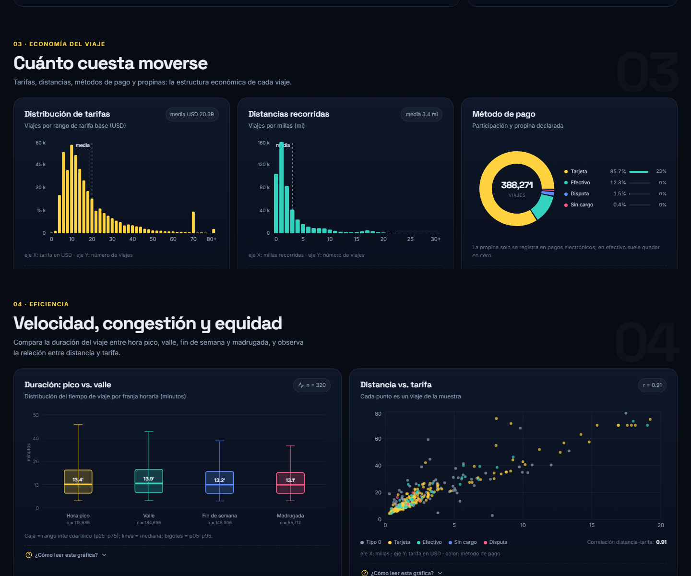
Los años 2016, 2023 y 2024 no están en el dataset entregado. El componente genera sus meses con
null para que la serie muestre un hueco real y no una caída a cero. Es una decisión
de honestidad visual: un cero significaría “no hubo viajes”, y lo que ocurre es “no hay datos”. La nota al pie del
gráfico y la sección de metodología lo explican. Lo mismo vale para marzo de 2018, que aparece inflado por una
duplicación del archivo original de la TLC: se conserva y se documenta, no se imputa.
El heatmap: 168 celdas sin 168 componentes
El ritmo semanal se dibuja con CSS Grid, no con un gráfico de Recharts. Cada celda es un button
con un color calculado por heatColor(); el tooltip muestra viajes, tarifa y duración. La escala va de
azul oscuro a amarillo en seis paradas, la misma que usa el mapa. Al pasar el cursor o enfocar con Tab, la celda
se ilumina y el encabezado muestra el pico de la semana.
Una sola función de color para el heatmap y la coropleta. Si cambia la escala, cambia en los dos lugares a la vez.
El boxplot: SVG propio cuando Recharts no alcanza
Recharts no trae un boxplot nativo. En lugar de forzar un gráfico de barras con bigotes, se escribió un
componente SVG de ~100 líneas que dibuja la caja (p25–p75), la mediana, los bigotes (p05–p95) y las etiquetas.
Usa ResizeObserver para adaptar el ancho y abrevia “Fin de semana” como “Finde” en pantallas
estrechas. El resultado es más legible que cualquier adaptación de barras y no añade una dependencia.
La caja es el rango intercuartílico; la línea central, la mediana; los bigotes, p05–p95. El detalle de cada grupo está en el tooltip y en la tabla de datos.
Interacción y lectura
Todos los gráficos comparten el mismo tooltip oscuro, la misma leyenda y el mismo acordeón “¿Cómo leer esta
gráfica?”. El acordeón no es un adorno pedagógico: resuelve el problema de un tablero que se mira sin contexto.
Explica qué hay en cada eje, qué mirar y qué cuidar (por ejemplo, que la muestra es de 500,000 viajes y no del
universo). Las animaciones se desactivan con prefers-reduced-motion y con el flag
--force-prefers-reduced-motion que se usó para las capturas.
La tabla de rutas y el ranking de zonas no usan Recharts a propósito. Cuando el lector necesita cifras exactas y ordenadas, una tabla es más eficiente que un gráfico; cuando necesita ver una distribución o una tendencia, el gráfico es superior. La mezcla de ambas es una decisión de lectura, no una inconsistencia.
Implementación del mapa
El mapa no es un adorno geográfico: es la respuesta a “¿dónde?”. Se eligió Leaflet porque consume GeoJSON de
forma nativa, no requiere token y permite superponer 263 polígonos con tooltips sin escribir un motor de mapas.
La geometría viene de public/data/taxi_zones.geojson (400 KB, 263 features), generada por
etl/02_build_geojson.py a partir del catálogo de zonas de la TLC. Cada feature trae
zoneId, zone, borough y serviceZone; los valores de viajes,
tarifa y propina se cruzan por zoneId con los agregados de dashboard.json.
Cómo se construye la coropleta
El componente mantiene tres estados: la métrica (pickups, dropoffs o
avg_fare), el borough seleccionado y la zona seleccionada. Con esos estados calcula el mínimo y el
máximo de las zonas visibles y asigna un color con heatColor(). Para los conteos usa
sqrt —una zona con el doble de viajes no debe verse el doble de saturada— y para la tarifa usa una
escala lineal. El resultado se pasa a la función style de GeoJSON, que se reevalúa
cuando cambia la clave del componente.
La clave fuerza el remontaje cuando cambia el año, la métrica o el borough; así el estilo y los tooltips se recalculan sin volver a descargar la geometría.
La geometría se descarga una sola vez en un useEffect y se guarda en estado. Al cambiar de año o
de métrica no se vuelve a pedir el GeoJSON: solo se recalculan los colores. Esa separación —geometría estática,
datos dinámicos— es la que mantiene fluido el filtro. El mapa base es una capa de tiles oscuros de Esri; la
atribución se conserva y el zoom con rueda está desactivado para no secuestrar el scroll de la página.
Interacción: del polígono a la ficha
Al pasar el cursor, cada zona muestra un tooltip con nombre, borough, recogidas, entregas, tarifa media y
propina. Al hacer clic, se abre un panel de detalle con cinco métricas y la zona se resalta con un borde blanco
mientras las demás se atenúan. El mismo panel se puede abrir desde el ranking top 10: mapa y lista comparten el
estado selected, de modo que el lector no tiene que buscar la zona dos veces.
El filtro por borough no solo colorea: recorta las features visibles y recalcula el máximo de la escala. Si se elige Queens, la leyenda se ajusta a Queens y el ranking muestra las zonas de Queens. Ese detalle evita el error clásico de comparar una zona de Queens contra el máximo de Manhattan y concluir que “no hay demanda”. La escala siempre es relativa a lo visible, y la leyenda lo declara.
| Decisión | Implementación | Efecto |
|---|---|---|
| Mapa base | Esri World Dark Gray, atribución visible | La ciudad se lee sin competir con la coropleta. |
| Escala de conteos | sqrt(trips / max) | Las zonas medianas no desaparecen frente a Manhattan. |
| Escala de tarifa | Lineal entre mínimo y máximo visibles | La tarifa se lee como un continuo, no como un volumen. |
| Filtro de borough | Recorta features y recalcula escala | Comparaciones justas dentro del territorio elegido. |
| Selección | Estado compartido mapa ↔ ranking | Una sola ficha para las dos vistas. |
| Rendimiento | GeoJSON una vez; remount por clave | El filtro de año no vuelve a descargar 400 KB. |
Paleta visual y estilos
La paleta de la Fase 2 no se reinterpretó: se tradujo a variables CSS. El fondo es un azul noche casi negro (#070b14), las tarjetas viven en dos niveles de panel (#0d1526 y #111c30) y el texto se organiza en tres intensidades. El amarillo taxi (#ffd23f) es el acento principal y el color de la demanda; el resto de la paleta es categórica: naranja para tarifa, turquesa para eficiencia, azul para comparación, rosa para alerta y verde para positivo.
| Token | Hex | Uso en la interfaz | Contraste |
|---|---|---|---|
--bg | #070B14 | Fondo de la página y del área de gráficos. | — |
--panel | #0D1526 | Tarjetas y contenedores principales. | — |
--panel-2 | #111C30 | Tarjetas elevadas, tooltips, celdas. | — |
--text | #E8EEF8 | Títulos, valores, texto principal. | 16.89:1 |
--muted | #8FA0B8 | Subtítulos, ejes, leyendas, notas. | 7.39:1 |
--muted-2 | #64748B | Metadatos de 10–11 px y marcas de agua. | 4.14:1 |
--yellow | #FFD23F | Demanda, CTA, foco, acento de marca. | 13.63:1 |
--orange | #FF9F43 | Tarifa y propina. | 9.65:1 |
--teal | #34D3C0 | Eficiencia y distancia. | 10.52:1 |
--blue | #5B8CFF | Comparación y año previo. | 6.22:1 |
--pink | #FF5C8A | Alertas y referencia de la pandemia. | 6.70:1 |
--green | #47D18C | Indicadores positivos y validación. | 10.09:1 |
Contraste calculado con la fórmula WCAG 2.1 sobre --bg. El texto secundario y los
acentos superan 4.5:1; --muted-2 queda en 4.14:1 y se reserva para metadatos que no son esenciales
para la lectura. Es una deuda declarada en la sección 9.
Tipografía: dos voces, una jerarquía
Las dos fuentes se cargan desde Google Fonts en index.html con display=swap y
preconnect. El cuerpo base es de 15 px con 1.55 de interlineado; los títulos usan
clamp() para no romper en móvil. El tablero no usa más de dos familias: la variedad viene del tamaño,
el peso y el color, no de acumular fuentes.
Cómo se aplica en React
Las variables viven en :root y se consumen con var(--yellow) en todo el CSS. Los
gráficos, en cambio, reciben hex literales en props de Recharts (stroke="#ffd23f"), porque SVG no
hereda variables CSS de la misma forma y se buscó que cada gráfico fuera explícito. Esa duplicación es una deuda
menor: si la paleta cambia, hay que tocar los dos lugares. La alternativa —leer las variables con
getComputedStyle— añadiría complejidad y un salto de render; para este tamaño, la duplicación
controlada es aceptable y está documentada.
Doce tokens gobiernan color, tipografía y radio. Cambiar el tema es cambiar este bloque, no perseguir hex por 17 componentes.
Retícula, ritmo y responsive
El contenido se limita a 1328 px y se organiza en una retícula de 12 columnas con gutter de 20 px. Las bandas principales usan proporciones estables: hero 1.45 / 0.85, demanda 1.62 / 0.9, mapa 1.7 / 0.8, economía en tres columnas iguales. Esa repetición crea un ritmo reconocible: el lector aprende dónde mirar. Los breakpoints son 1180, 860, 640, 420 y 360 px; en 1180 la banda KPI pasa a 3 columnas y la demanda a una; en 860 desaparece la nav y el header se reorganiza; en 640 el hero y las tarjetas se apilan.
La jerarquía N1/N2/N3 de la Fase 2 se mantiene con las insignias de las tarjetas y con el peso tipográfico: N1 el mensaje que ordena la sección, N2 los gráficos que lo explican y N3 el contexto que se lee después. El color no se usa para decorar: cada categoría tiene un tono estable en todos los gráficos (amarillo = tarjeta/demanda, turquesa = efectivo/distancia, azul = comparación, rosa = alerta).
Accesibilidad
- Contraste: texto principal 16.89:1, secundario 7.39:1, amarillo 13.63:1. El único token por
debajo de 4.5:1 es
--muted-2(4.14:1), usado solo en metadatos. - Teclado: los botones de año, los chips de borough, las celdas del heatmap y las rutas son
buttonreales; el foco se dibuja con:focus-visibley no se elimina. - Estado: los filtros usan
aria-pressed; el menú de año usaaria-expandedyaria-controls; el mapa tiene atribución y textos alternativos. - Movimiento:
prefers-reduced-motiondesactiva animaciones de entrada, conteo y gráficos. Las capturas de este informe se tomaron con esa preferencia activa. - Táctil: los controles móviles apuntan a 44 × 44 px; el zoom del mapa se desactiva con la rueda para no bloquear el scroll.
Problemas encontrados y soluciones
Documentar solo el resultado da una falsa impresión de linealidad. El tablero se construyó con iteraciones, errores de datos y ajustes de responsive. Esta sección recoge los problemas que cambiaron el código o el diseño, y la evidencia de que quedaron resueltos. Los tres primeros son de datos; los siguientes, de interfaz y rendimiento.
| # | Problema | Causa | Solución | Evidencia |
|---|---|---|---|---|
| 1 | 86.9 GB no caben en una petición web | El dataset completo tiene 599.5 M filas; descargarlo o consultarlo en el navegador es inviable. | DuckDB lee los CSV, limpia y muestrea 500,000 viajes por año (semilla 42). El ETL exporta agregados a un JSON de 741 KB. | El tablero abre sin backend; dashboard.json es el único dato de viajes que viaja al cliente. |
| 2 | Años ausentes que parecían ceros | Faltan 2016, 2023 y 2024 en el conjunto entregado. Un 0 en la serie sugeriría “no hubo viajes”. | La serie genera los 12 meses del rango y deja null en los años ausentes; la nota al pie y la metodología lo explican. | El área histórica muestra huecos, no caídas; el texto “Faltan 2016, 2023 y 2024” es visible. |
| 3 | Marzo de 2018 inflado | Una duplicación en el archivo original de la TLC eleva el conteo de ese mes. | Se conserva sin imputar y se documenta en la nota del gráfico y en metodología. Imputar habría ocultado un problema de la fuente. | La nota de 2018 aparece solo cuando se selecciona ese año. |
| 4 | Promedio de promedios al cambiar de año | Agregar meses o zonas promediando sus medias produce cifras sesgadas. | El ETL usa sumas y denominadores comunes; hourlyFor y zonesFor reagregan con pesos de viajes, no con medias simples. | El KPI “Todos” (4 M viajes) no es la media de los ocho años. |
| 5 | La tira de años desbordaba en móvil | Ocho años + “Todos” no caben en 390 px sin scroll horizontal incómodo. | Se añadió un selector compacto con menú (Todos + rejilla de años) y se conservó la tira solo en escritorio. | Captura móvil de la Fig. 4.8; el header no se desborda. |
| 6 | Etiquetas del boxplot solapadas | “Fin de semana” choca con la etiqueta vecina en pantallas estrechas. | ResizeObserver ajusta el ancho y la etiqueta se abrevia a “Finde” por debajo del umbral. | El boxplot se lee completo en 390 px y en 1440 px. |
| 7 | Animaciones que arruinaban las capturas | Recharts y el conteo de KPIs se dibujan de forma asíncrona; una captura a mitad de animación muestra cifras incompletas. | ANIMATE respeta prefers-reduced-motion; las capturas usan --force-prefers-reduced-motion y un presupuesto de tiempo virtual. | Las figuras muestran valores finales, no intermedios. |
| 8 | 263 polígonos y un mapa base externo | Recargar la geometría en cada filtro o recrear la capa completa cuesta tiempo y provoca parpadeos. | El GeoJSON se descarga una vez; el estilo se recalcula con una función y el componente se remonta con una clave por año/métrica/borough. | El cambio de año es inmediato; no se repite la petición de 400 KB. |
| 9 | El wireframe fijaba 2025 y el producto abre en “Todos” | El wireframe necesitaba cifras comparables con la Fase 2; el producto quiere mostrar la serie histórica. | Se documentan las dos vistas y se captura el estado 2025 para la comparación. Además se hicieron explícitos el 87.1%, el 19.4% y el 46,007 en el mapa y las lecturas. | Figs. 4.1–4.3; el estado inicial “Todos” se declara en la introducción. |
Los tres problemas que más enseñaron
1. El dato pesado no pertenece al cliente
La primera tentación fue cargar los Parquet con DuckDB-WASM para permitir consultas libres. Se descartó tras medir el costo: el dataset completo no cabe en una sesión de navegador y el arranque se vuelve lento. La solución —precalcular— obliga a decidir de antemano qué cortes ofrece el tablero, pero hace que la aplicación sea rápida, estática y fácil de publicar. Es un intercambio de flexibilidad por viabilidad, y para este proyecto es el correcto.
2. Un filtro cambia el significado, no solo el número
“Viajes en octubre” es una cifra clara cuando hay un año seleccionado y una cifra ambigua cuando se suman ocho. El mismo problema aparece con la concentración y la hora pico: son proporciones que dependen del denominador. La implementación resolvió mover esos indicadores al bloque que los explica (serie, mapa, heatmap) y dejar en la banda solo los que se comparan de forma directa. Esa decisión es la principal desviación respecto del wireframe y la que más mejoró la lectura.
3. La accesibilidad también es diseño
El contraste, el foco visible, el movimiento reducido y los controles táctiles no fueron un “extra” al final:
cambiaron decisiones de implementación. El hook useCountUp devuelve el valor final si el sistema pide
menos movimiento; el heatmap usa button para que se pueda recorrer con Tab; el mapa desactiva el zoom
con rueda para no secuestrar el scroll. Ninguna de esas cosas se ve en una captura, pero se sienten al usar el
tablero.
Los tres ajustes de esta fase
La auditoría contra el wireframe encontró tres cifras que existían en los datos pero no aparecían en el texto del tablero. Se hicieron explícitas con cambios mínimos, sin alterar el diseño ni los cálculos.
| Archivo | Antes | Ahora | Efecto |
|---|---|---|---|
Insights.tsx | “El mes más activo fue octubre.” | “El mes más activo fue octubre, con 46,007 viajes.” | Reproduce el KPI de demanda de la Fase 2. |
Insights.tsx | “5,261 viajes en esa franja.” | “5,261 viajes en esa franja · 19.4% en 17–19 h.” | Hace visible la participación de la hora pico. |
ZonesSection.tsx | “500,000 viajes con zona de origen · 254 zonas activas.” | “… · 87.1% en Manhattan.” | Expone la concentración territorial en el mapa. |
Los tres valores se derivan de los mismos agregados que alimentan los gráficos: el mes pico de
monthly, la suma de 17–19 h de hourly y la proporción de recogidas de Manhattan en
zones. No se escribió ninguna cifra a mano; si el JSON cambia, el texto cambia con él.
Verificación de la entrega
Antes de cerrar el documento se ejecutó una lista de comprobaciones. No son declaraciones de intención: cada una se hizo sobre el build de producción y dejó evidencia en las figuras o en la salida del comando.
| Comprobación | Cómo se hizo | Resultado |
|---|---|---|
| Compilación | npm run build (incluye tsc --noEmit) | 2,263 módulos, 6.5 s, cero errores de tipos. |
| Cifras del wireframe | Filtro 2025 y lectura de KPI, mapa y lecturas rápidas | 46,007 · $20.39 · 87.1% · 19.4% · 11.1 mph. |
| Estructura visual | Comparación bloque a bloque con la Fase 2 | Siete pares de escritorio y dos de móvil; cuatro desviaciones justificadas. |
| Paleta | Revisión de tokens en :root y cálculo de contraste WCAG | Doce tokens; once superan 4.5:1. |
| Responsive | Capturas a 1440 y 390 px, más los breakpoints de 1180 y 860 | Sin desbordes horizontales; menú de año compacto en móvil. |
| Movimiento reducido | Capturas con --force-prefers-reduced-motion | Las cifras y los gráficos aparecen en su valor final. |
| Teclado | Recorrido con Tab por años, chips, heatmap y rutas | Foco visible, aria-pressed y aria-expanded correctos. |
--muted-2. Ambas quedan anotadas, no escondidas.
Reflexión técnica
1. El wireframe es un contrato, pero no un plano completo. Un plano muestra el estado feliz: datos cargados, pantalla ancha, año seleccionado. La implementación obliga a resolver el resto: qué pasa mientras carga, qué pasa si el JSON falla, qué pasa si no hay año previo, qué pasa en 390 px. Documentar esas decisiones es tan importante como documentar el parecido visual.
2. La forma del dato decide la arquitectura. El tablero es rápido porque el dato pesado se queda en el ETL. Esa decisión no se tomó en React: se tomó al elegir DuckDB y exportar agregados. La interfaz es la punta del iceberg; debajo hay un pipeline que limpia, muestrea y calcula. Un buen dashboard se diseña desde el dato hacia arriba, no desde el píxel hacia abajo.
3. Los componentes deben seguir bloques visuales, no tablas de la base. Hay un componente por
tarjeta, no por tabla. ZonesSection consume zonas y geometría; EconomySection consume
tres fuentes distintas. Esa frontera permite cambiar la presentación sin tocar el ETL y viceversa. La cohesión se
mide por la pregunta que responde el bloque, no por la cantidad de datos que carga.
4. La paleta es un sistema, no una lista de colores. Definir tokens evita que el amarillo de una tarjeta sea distinto del amarillo de un gráfico. La duplicación de hex en Recharts es una excepción controlada y documentada; la regla general es que el color se decide una vez. Lo mismo vale para los formatos: una función de moneda, una de porcentaje, una de velocidad.
5. La honestidad visual es parte de la calidad. Un hueco no es un cero; una muestra no es el universo; una propina en efectivo no registrada no es una propina de 0%. El tablero podría verse más “completo” si imputara esos valores, pero sería menos confiable. La decisión de mostrar la falta —en la nota, en la metodología y en el tipo de gráfico— es una decisión de diseño que la Fase 2 ya había tomado y que la implementación respetó.
Qué cambiaría en una siguiente iteración
- Estado en la URL: que
?year=2025abra directamente ese año. Mejoraría la reproducibilidad de las capturas y permitiría compartir una vista concreta. - División de chunks: cargar Leaflet y el GeoJSON solo cuando el mapa entra en viewport, para reducir el arranque en móvil.
- Pruebas: unitarias para
heatColor,correlationy los agregados; de extremo a extremo para el cambio de año y la selección de zona. - Tokens compartidos con los gráficos: exportar la paleta desde un módulo TypeScript para eliminar los hex literales de Recharts.
- Prueba con usuarios: el wireframe se validó visualmente, pero no se midió si un lector nuevo entiende el heatmap sin abrir la ayuda. Esa es la deuda de investigación.
La reflexión más útil es incómoda: la banda de seis tarjetas iguales perdió la jerarquía N1 que el wireframe tenía. Ganó comparabilidad y coherencia con el filtro, pero el primer golpe de vista es menos contundente. Una siguiente versión podría recuperar una tarjeta destacada —por ejemplo, la demanda del mes pico— sin perder las otras cinco. Reconocerlo es parte del ejercicio: el diseño no termina cuando compila.
Balance: lo que funcionó y lo que ajustaría
| Decisión | Resultado observado | Siguiente paso |
|---|---|---|
| Precalcular con DuckDB | Arranque rápido y publicación estática; el límite son los cortes precalculados. | Parquet bajo demanda solo si un caso lo exige. |
| CSS con tokens | Paleta coherente y un único archivo de estilos que auditar. | Exportar los tokens a TypeScript. |
| Un componente por bloque | Cambios localizados; el wireframe se lee como lista de piezas. | Pruebas de render y de datos por sección. |
| Anclas en lugar de router | Navegación simple y accesible, sin peso extra. | Año en la URL con replaceState. |
Conclusión y autoevaluación
La Fase 3 cumplió su objetivo: transformar el wireframe de la Fase 2 en un dashboard funcional en React sin perder la estructura visual, los KPIs ni la coherencia estética. El resultado es una aplicación de una sola página, con 17 componentes, seis KPIs, once visualizaciones, un mapa de 263 zonas y un pipeline reproducible que convierte 86.9 GB de CSV en 741 KB de agregados. El build pasa sin errores y la publicación es estática.
La correspondencia no se afirma: se demuestra. Siete pares de capturas muestran el mismo orden, las mismas proporciones y el mismo lenguaje visual. Las cinco cifras del wireframe aparecen en el dashboard al seleccionar 2025, y las cuatro desviaciones —banda KPI, color del ticket, etiquetas de navegación y estado inicial— están explicadas con su razón de producto. Ningún bloque del diseño se eliminó; varios se ampliaron con datos que la maqueta no mostraba, como la duración de las rutas o el histograma de distancias.
Autoevaluación frente a la rúbrica
| Criterio | Pts | Cómo se cumple | Evidencia |
|---|---|---|---|
| Correspondencia wireframe / dashboard | 25 | Siete pares de capturas, tabla de balance y cuatro desviaciones justificadas. La estructura, la paleta y la jerarquía se conservan; las cifras se reproducen con el filtro 2025. | Cap. 4; Figs. 4.1–4.9 |
| Implementación de KPIs y gráficos | 25 | Seis KPIs con fórmula, campo y formato; once visualizaciones con su porqué; los cinco KPIs de Fase 2 son localizables y verificables. | Caps. 5–7; Fig. 6.1 |
| Uso de la paleta | 15 | Doce tokens, ocho muestras con contraste, tipografía y reglas de aplicación; la paleta de Fase 2 se conserva. | Cap. 8 |
| Estructura y legibilidad del código | 15 | 17 componentes con una responsabilidad, lib/ separado, tipos estrictos y build sin errores. | Cap. 2; árbol y tablas |
| Documentación de la implementación | 20 | Once secciones, capturas reales, fragmentos de código, problemas y soluciones, reflexión y anexo reproducible. | Todo el informe |
| Total | 100 | Entrega completa, con límites y deudas declaradas. | — |
Siguientes pasos
- Incorporar 2023 y 2024 cuando estén disponibles para cerrar la serie histórica.
- Mover el estado del año a la URL y separar el mapa en un chunk bajo demanda.
- Añadir pruebas unitarias de los agregados y de la escala de color.
- Probar la lectura con cinco usuarios y ajustar la ayuda de los gráficos según lo observado.
- Revisar el contraste de
--muted-2y documentar el resultado en una auditoría WCAG.
El dashboard está publicado en https://srmeme64.github.io/nyc-mobility-pulse/ y
el código vive en el repositorio del proyecto. Las figuras de este informe se generan con
docs/fase3/make_figures.py a partir de capturas reales; el PDF se construye con
docs/fase3/build_fase3.py.
Anexo: comandos, figuras y referencias
Comandos del proyecto
| Comando | Qué hace |
|---|---|
npm install | Instala React, Recharts, Leaflet, lucide-react y las herramientas de build. |
npm run dev | Levanta Vite en modo desarrollo con HMR. |
npm run build | Ejecuta tsc --noEmit y genera dist/. |
npm run preview | Sirve el build de producción para revisarlo antes de publicar. |
python etl/04_build_aggregates.py | Regenera public/data/dashboard.json desde las muestras Parquet y el catálogo de zonas. |
python docs/fase3/make_figures.py | Captura el dashboard en 1440 px y 390 px (Todos y 2025) y recorta las figuras del informe. |
python docs/fase3/build_fase3.py | Convierte report.html en el PDF, estampa pie de página y numeración. |
Trazabilidad de las figuras
Las capturas del dashboard se tomaron con Edge headless a 1440 × 10000 px y 390 × 16000 px, con
--force-prefers-reduced-motion y --force-device-scale-factor=1. El estado 2025 se fijó
con una página auxiliar del mismo origen que carga la app en un iframe y pulsa el botón del año; esa página no se
publica, solo se usa para documentar. Los recortes se hicieron por bloques para que el texto sea legible en A4 y
se guardaron en docs/fase3/. El wireframe proviene de docs/fase2/report-desk-*.png y
report-mobile-*.png, sin retoques.
| Figura | Fuente | Estado |
|---|---|---|
| Figs. 4.1–4.7 | Wireframe Fase 2 + captura 1440 px del dashboard | 2025 |
| Figs. 4.8–4.9 | Wireframe móvil Fase 2 + captura 390 px | 2025 |
| Fig. 6.1 | Recorte de economía + eficiencia | 2025 |
| Fig. 7.1 | Recorte del mapa y el ranking | 2025 |
Referencias
- NYC Taxi & Limousine Commission. TLC Trip Record Data. https://www.nyc.gov/site/tlc/about/tlc-trip-record-data.page
- React. React 19 Documentation. https://react.dev
- Vite. Vite 6 Documentation. https://vite.dev
- Recharts. Recharts Documentation. https://recharts.org
- Leaflet. Leaflet Documentation. https://leafletjs.com
- W3C. Web Content Accessibility Guidelines (WCAG) 2.1. https://www.w3.org/TR/WCAG21/
- DuckDB. DuckDB Documentation. https://duckdb.org/docs/
Documento generado a partir de docs/fase3/report.html. Las cifras de 2025 y de la
muestra completa provienen de public/data/dashboard.json; las de calidad, de
data/quality_report.json. Si los datos cambian, deben cambiar las figuras y este texto: el informe no
es un adorno del producto, es su acta.